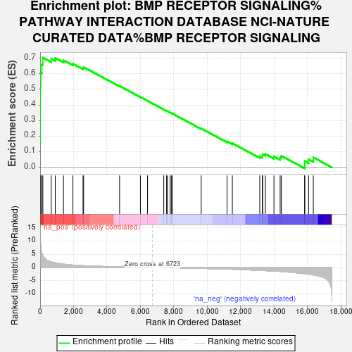
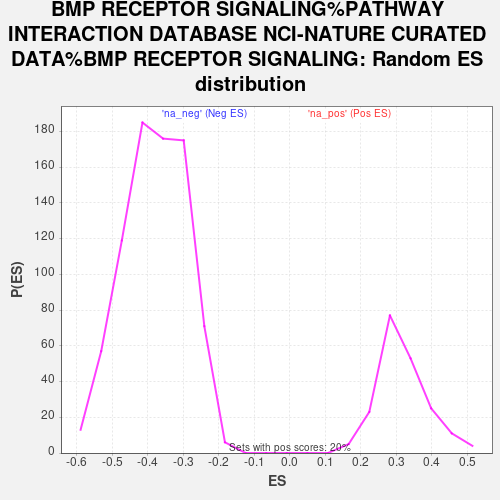

| Dataset | gene_ranks |
| Phenotype | NoPhenotypeAvailable |
| Upregulated in class | na_pos |
| GeneSet | BMP RECEPTOR SIGNALING%PATHWAY INTERACTION DATABASE NCI-NATURE CURATED DATA%BMP RECEPTOR SIGNALING |
| Enrichment Score (ES) | 0.7037023 |
| Normalized Enrichment Score (NES) | 2.2139041 |
| Nominal p-value | 0.0 |
| FDR q-value | 6.5232837E-4 |
| FWER p-Value | 0.007 |

| SYMBOL | RANK IN GENE LIST | RANK METRIC SCORE | RUNNING ES | CORE ENRICHMENT | |
|---|---|---|---|---|---|
| 1 | SMAD6 | 0 | 14.930 | 0.1510 | Yes |
| 2 | SMAD9 | 8 | 12.791 | 0.2799 | Yes |
| 3 | NOG | 9 | 12.570 | 0.4070 | Yes |
| 4 | BAMBI | 12 | 11.033 | 0.5184 | Yes |
| 5 | SMAD7 | 34 | 8.656 | 0.6047 | Yes |
| 6 | BMP7 | 102 | 5.718 | 0.6587 | Yes |
| 7 | BMPR1A | 163 | 4.790 | 0.7037 | Yes |
| 8 | BMPR2 | 663 | 2.168 | 0.6970 | No |
| 9 | ZFYVE16 | 907 | 1.800 | 0.7012 | No |
| 10 | SMAD1 | 1397 | 1.331 | 0.6866 | No |
| 11 | XIAP | 1964 | 0.984 | 0.6641 | No |
| 12 | TAB2 | 2570 | 0.744 | 0.6369 | No |
| 13 | PPM1A | 2602 | 0.738 | 0.6426 | No |
| 14 | CHRDL1 | 4758 | 0.258 | 0.5215 | No |
| 15 | BMP2 | 6003 | 0.082 | 0.4510 | No |
| 16 | SMAD4 | 6431 | 0.030 | 0.4268 | No |
| 17 | CTDSP1 | 7403 | -0.023 | 0.3713 | No |
| 18 | SMURF2 | 7571 | -0.040 | 0.3621 | No |
| 19 | MAP3K7 | 7620 | -0.046 | 0.3598 | No |
| 20 | MAPK1 | 7785 | -0.065 | 0.3511 | No |
| 21 | SKI | 7854 | -0.073 | 0.3479 | No |
| 22 | GSK3B | 7922 | -0.082 | 0.3449 | No |
| 23 | GREM1 | 9644 | -0.307 | 0.2492 | No |
| 24 | SMAD5 | 11192 | -0.566 | 0.1662 | No |
| 25 | BMP4 | 11508 | -0.624 | 0.1544 | No |
| 26 | RGMB | 13149 | -1.046 | 0.0709 | No |
| 27 | NUP214 | 13308 | -1.101 | 0.0730 | No |
| 28 | SMURF1 | 13321 | -1.105 | 0.0834 | No |
| 29 | PPP1R15A | 13485 | -1.151 | 0.0857 | No |
| 30 | BMP6 | 13999 | -1.313 | 0.0696 | No |
| 31 | CTDSP2 | 14370 | -1.447 | 0.0630 | No |
| 32 | CHRD | 14439 | -1.481 | 0.0740 | No |
| 33 | RGMA | 15839 | -2.292 | 0.0169 | No |
| 34 | PPP1CA | 15841 | -2.297 | 0.0401 | No |
| 35 | TAB1 | 16073 | -2.477 | 0.0519 | No |
| 36 | CTDSPL | 16355 | -2.741 | 0.0635 | No |
